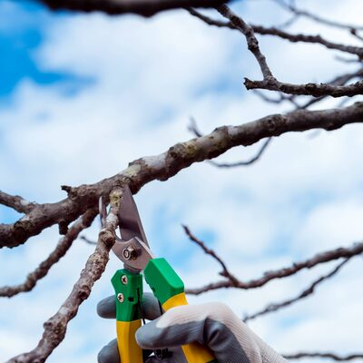
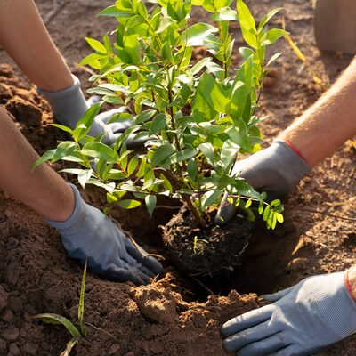
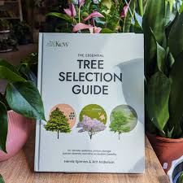
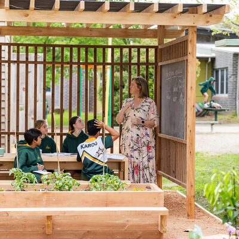

Snoeien
Een boom die goed gesnoeid wordt, groeit mooier, gezonder en
veiliger. Treeminded snoeit op maat: afgestemd op de soort, het
seizoen en uw wensen. Wij werken altijd volgens de principes van
natuurlijk snoeiwerk, zodat de boom zo min mogelijk stress ervaart.
Voor wie? Particulieren, gemeenten, bedrijven en
terreinbeheerders.

Aanplant & verplanting
De juiste boom op de juiste plek, dat is de basis van een gezonde tuin of een groen landschap. Wij adviseren u over de keuze van de soort en zorgen voor een professionele aanplant of verplanting, inclusief begeleiding in de eerste groeifase.

Bomen verwijderen
Soms is het nodig een boom te verwijderen, vanwege ziekte, gevaar of ruimtegebrek. Treeminded voert dit veilig en vakkundig uit, met aandacht voor de omgeving. Waar mogelijk bekijken we eerst of behoud of verplanting een alternatief biedt.

Bomen rooien
Na het vellen zorgen wij ook voor het verwijderen van de stronk en de wortels. Uw terrein wordt netjes achtergelaten, klaar voor hergebruik.

VTA boom-onderzoek
Visual Tree Assessment (VTA) is een
gestandaardiseerde methode om de veiligheid en gezondheid van een
boom visueel te beoordelen. Bij twijfel over de stabiliteit of
conditie van een boom voert Treeminded een VTA-onderzoek uit.
Indien nodig volgen aanvullende metingen.
Dit is met name relevant voor bomen in de buurt van woningen,
openbare wegen of publieke ruimtes.

Plaagbestrijding
Bomen kunnen te kampen krijgen met aantasting door insecten, schimmels of andere organismen. Treeminded herkent de signalen en handelt snel. Denk aan het verwijderen van rupsennesten (zoals de eikenprocessierups), maar ook aan behandeling van schimmelziekten en andere plagen.

Advies & meerjarenplanning
Goed boombeheer begint bij een goed plan. Treeminded biedt
holistische tuinbegeleiding: wij kijken naar het geheel en stellen
samen met u een meerjarenplan op. Zo weet u altijd wat er wanneer
moet gebeuren en blijven uw bomen in topconditie.
Advies over onder meer: boomsoort- en
locatiekeuze, ziektes en aantastingen, snoeifrequentie en -methode,
veiligheid en risicobeheer.
Excursies
Wilt u meer leren over de wereld van bomen? Treeminded organiseert educatieve boomwandelingen waarbij u op een toegankelijke manier kennismaakt met de natuur om u heen. Geschikt voor particulieren, scholen en groepen.